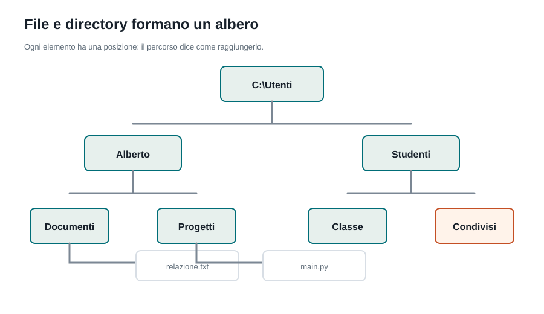
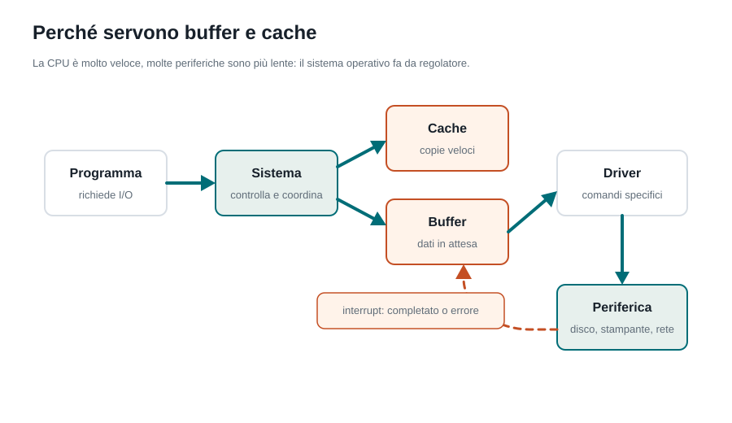

Capitoletto 4
File e periferiche
Il sistema operativo conserva i dati in file e cartelle, controlla i permessi e permette ai programmi di usare dispositivi diversi senza conoscere i dettagli dell'hardware.
Obiettivi della lezione
- Distinguere file, directory, percorso e file system.
- Capire perché i metadati sono importanti.
- Descrivere cosa succede quando un programma legge o salva un file.
- Spiegare il ruolo di driver, buffer, cache e interrupt.
- Collegare file e periferiche alla sicurezza del sistema operativo.
File, directory e percorsi
Un file contiene dati: testo, immagini, programmi, video, configurazioni. Una directory, o cartella, serve a organizzare file e altre directory. Il percorso indica dove si trova un elemento dentro questa struttura.

| Elemento | Significato | Esempio |
|---|---|---|
| File | Unità logica che contiene dati. | relazione.txt, foto.jpg, main.py |
| Directory | Contenitore che organizza file e cartelle. | Documenti, Progetti, Download |
| Percorso assoluto | Parte dalla radice del file system. | C:\Utenti\Alberto\Documenti\relazione.txt |
| Percorso relativo | Parte dalla cartella corrente. | ../immagini/logo.png |
Metadati e permessi
Il sistema operativo non salva solo il contenuto del file. Salva anche informazioni che servono per gestirlo: nome, dimensione, data di creazione, data di modifica, proprietario, permessi e posizione fisica dei blocchi sul disco.
| Metadato | A cosa serve |
|---|---|
| Nome | Permette all'utente e ai programmi di riconoscere il file. |
| Estensione | Suggerisce il tipo di contenuto, per esempio .txt, .html, .jpg. |
| Dimensione | Indica quanto spazio occupa. |
| Date | Aiutano a capire quando il file è stato creato o modificato. |
| Proprietario | Collega il file a un utente o a un gruppo. |
| Permessi | Stabiliscono chi può leggere, scrivere o eseguire. |
File system
Il file system stabilisce come i dati vengono organizzati sul dispositivo di memorizzazione. Decide come nominare i file, come tenere l'indice delle directory, come gestire lo spazio libero e come recuperare i dati dopo un errore.
| File system | Dove si trova spesso | Caratteristica utile |
|---|---|---|
| NTFS | Windows | Permessi avanzati, journaling e gestione affidabile dei dischi. |
| ext4 | Linux | Molto diffuso su server e sistemi Linux. |
| APFS | macOS | Ottimizzato per dispositivi Apple moderni e unità SSD. |
| exFAT | Chiavette USB e dischi esterni | Compatibile con molti sistemi operativi. |
Dal programma al disco

Quando un programma vuole leggere o salvare un file, non modifica direttamente il disco. Chiede al sistema operativo di farlo. Il sistema controlla i permessi, consulta il file system, usa cache e driver, poi restituisce il risultato al programma.
- Il programma chiama una funzione di sistema, per esempio “apri file”.
- Il sistema operativo controlla se l'utente ha il permesso.
- Il file system trova i blocchi in cui sono salvati i dati.
- Il driver comunica con il dispositivo fisico.
- I dati arrivano al programma, spesso passando da buffer o cache.
Periferiche e driver
Una periferica è un dispositivo collegato al computer: tastiera, mouse, monitor, stampante, disco, scheda di rete, webcam. Il sistema operativo offre ai programmi un modo uniforme per usarle; il driver traduce le richieste generiche in comandi specifici per quel modello di dispositivo.
| Periferica | Tipo di operazione | Esempio di richiesta |
|---|---|---|
| Tastiera | Input | Rilevare il tasto premuto. |
| Monitor | Output | Disegnare finestre, testo e immagini. |
| Stampante | Output lento | Mettere un documento in coda di stampa. |
| Disco | Memorizzazione | Leggere o scrivere blocchi di dati. |
| Scheda di rete | Comunicazione | Inviare e ricevere pacchetti. |
Buffer, cache e interrupt

| Meccanismo | Funzione | Esempio |
|---|---|---|
| Driver | Controlla una periferica specifica. | Driver della stampante o della scheda video. |
| Interrupt | Avvisa la CPU che una periferica richiede attenzione. | La scheda di rete segnala l'arrivo di dati. |
| Buffer | Memorizza temporaneamente dati in transito. | La coda di stampa. |
| Cache | Conserva copie veloci di dati usati spesso. | File letto di recente mantenuto in RAM. |
Questi meccanismi evitano che la CPU perda tempo ad aspettare dispositivi più lenti. Il sistema operativo prepara, mette in coda e riutilizza dati quando conviene.
Esempio guidato: salvare e stampare
Immagina di scrivere una relazione e premere “Salva”, poi “Stampa”. In pochi secondi entrano in gioco file, permessi, file system, driver e periferiche.
| Azione | Cosa fa il sistema operativo |
|---|---|
| Salva il documento | Controlla i permessi e scrive i dati nel file system. |
| Aggiorna i metadati | Modifica dimensione e data di ultima modifica. |
| Invia alla stampante | Mette il lavoro in una coda di stampa. |
| Usa il driver | Traduce il documento in comandi comprensibili dalla stampante. |
| Gestisce errori | Segnala carta esaurita, stampante offline o accesso negato. |
Esercizi guidati
- Scegli un file sul tuo computer e individua almeno quattro metadati.
- Scrivi un percorso assoluto e un percorso relativo riferiti a una cartella di lavoro.
- Spiega perché una chiavetta USB usa spesso exFAT.
- Descrivi cosa succede, a grandi linee, quando salvi un documento.
- Fai un esempio di buffer nella vita quotidiana e collegalo all'informatica.
- Spiega perché un programma non dovrebbe accedere direttamente all'hardware.
Domande con risposta semplice
Che cos'è un file?
È un contenitore logico di dati, per esempio un testo, un'immagine, un programma o una configurazione.
Che cos'è un file system?
È il metodo con cui il sistema operativo organizza file, directory, metadati e spazio libero su un dispositivo.
A cosa serve un driver?
Serve a far comunicare il sistema operativo con una periferica specifica, traducendo le richieste in comandi adatti a quel dispositivo.
Perché esistono buffer e cache?
Per rendere più efficiente il passaggio dei dati: il buffer mette in attesa, la cache evita di rileggere dati già usati spesso.
Che cos'è un interrupt?
È un segnale con cui una periferica avvisa la CPU o il sistema operativo che è successo qualcosa.
Perché i permessi sui file sono importanti?
Perché impediscono accessi non autorizzati: non tutti devono poter leggere, modificare o eseguire qualunque file.
Per ripassare
Ripeti in questo ordine: file, directory, percorso, metadati, file system, driver, buffer, cache, interrupt. Poi prova a spiegare cosa succede quando salvi un documento: se riesci a usare questi termini, la lezione è chiara.